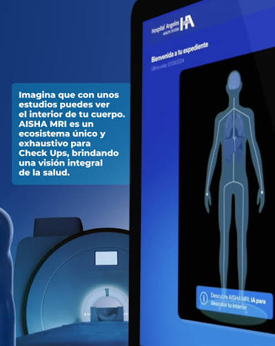

Funciona
¿Cómo funciona AISHA?
Un proceso que integra resonancia magnética, análisis con IA, reconstrucción 3D y revisión médica.

01
Resonancia AISHA
Se realiza una resonancia magnética de cuerpo completo, de aproximadamente 60 minutos.
02
AnálisisIA
El algoritmo analiza las imágenes y organiza la información anatómica.
03
Reconstrucción 3D
La información se utiliza para generar una representación tridimensional del cuerpo.
04
Resultados
La información queda disponible mediante AISHA Health Record, con revisión médica.